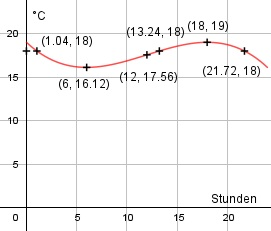

Aufgabe 77 Die Tagestemperatur O an der Oberfläche eines Sees lässt sich durch O(t) = - (1/300)t3 + (3/25)t2 - (27/25)t + 19 beschreiben, wenn O die Temperatur in °C und t die Zeit in Stunden angibt. a) Wie hoch ist die Temperatur im Wendepunkt des Graphen? b) Nach wie viel Stunden betrug die Temperatur 18°C? c) Wann war die Temperatur am höchsten? d) Wie groß war die Temperaturdifferenz an diesem Tag? a) O'(t) = - 0,01t2 + 0,24t - 1,08 O''(t) = - 0,02t + 0,24 -0,02t + 0,24 = 0 |-0,02t 0,02t = 0,24 |:0,02 t = 12 Stunden, O(12) = 17,56 °C b) 18 = (1/300)t3 + (3/25)t2 - (27/25t) + 19 |-18 (1/300)t3 + (3/25)t2 - (27/25)t + 1 = 0 Wertetabelle: t 0 1 2 13 14 20 O 19 18,037 17,3 17,9 18,25 18,7 t 21 22 O 18,4 17,8 Funktionswert 18° zwischen 1 und 2 --> gewählt t = 1 Funktionswert 18° zwischen 13 und 14 --> gewählt t = 13,3 Funktionswert 18° zwischen 21 und 22 --> gewählt t = 21,7 Newton Näherungsverfahren: O(1) - 18 18,037 - 18 t1 = 1 - ---------- = 1 - ------------- = 1,04 O'(1) -0,85 O(13,3) - 18 t2 = 13,3 - ------------- = 13,3 - O'(13,3) 18,021 - 18 - -------------- = 13,24 0,343 O(21,7) - 18 t3 = 21,7 - -------------- = 21,7 - O'(21,7) 18,01 - 18 - ------------ = 21,72 -0,581 Die Temperatur von 18°C wird nach 1,04, nach 13,24 und nach 21,72 Stunden erreicht. c) -0,01t2 + 0,24t - 1,08 = 0 |:(-0,01) t2 - 24t + 108 = 0 p, q - Formel: p = -24, q = 108 x1,2 = x1,2 = 12 ± x1,2 = 12 ± t1,2 = 12 ± 6 t1 = 18, O(18) = -(1/300) * 183 + (3/25) * 182 - - (27/25) * 18 + 19 = 19° t2 = 6, O(6) = - (1/300) *63 + (3/25) * 62 - - (27/25) * 6 + 19 = 16,12° O''(18) = - 0,02 * 18 + 0,24 < 0 --> Hochpunkt (18|19) O''(6) = - 0,02 * 6 + 0,24 > 0 --> Tiefpunkt (6|16,12) Nach 18 Stunden ist die Temperatur maximal und beträgt 19°. d) Die Temperaturdifferenz an diesem Tag beträgt 19° - 16,12° = 2,88°C.
